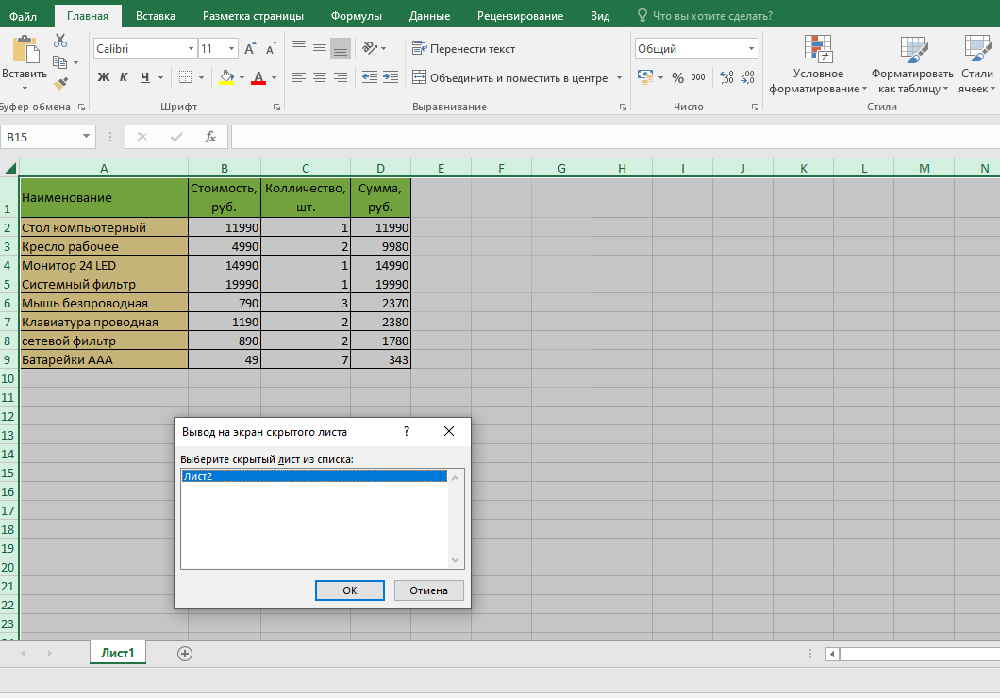
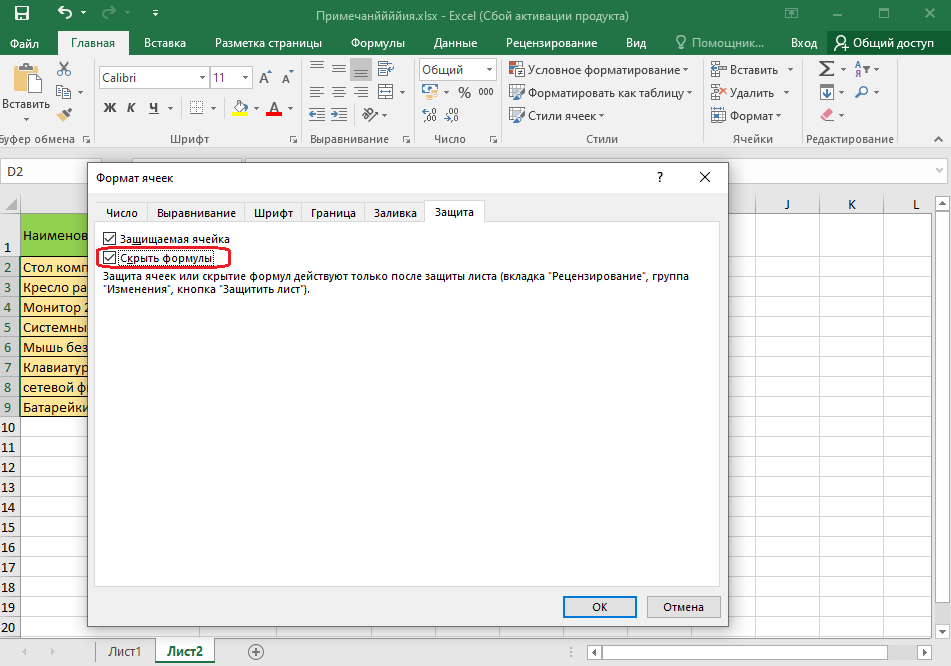
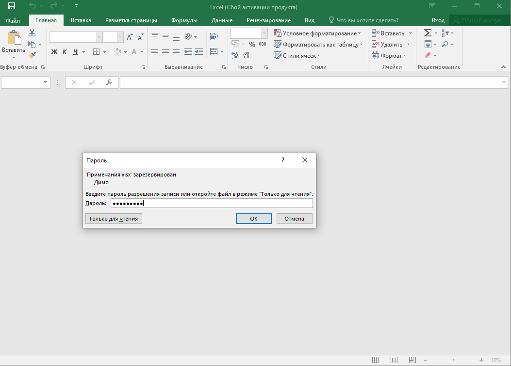

Microsoft Office Exel
Снятие пароля Снять пароль можно только после открытия файла.
1. Нажмите кнопку Office, а затем выберите команду Сохранить как.
2. В окне Сохранение документа нажмите кнопку Сервис выберите команду Общие параметры.
3. В окне Параметры сохранения (см. рис. 13.17) очистите поле Пароль для открытия и нажмите кнопку ОК.
4. В окне Сохранение документа нажмите кнопку Сохранить. Если файл сохраняется под существующим именем в исходную папку, подтвердите замену существующего файла.
Защита листов от просмотра
Скрытие листов

Защита элементов листа от просмотра
Скрытие строк и столбцов
Столбцы и строки листа можно скрыть. Однако, этого недостаточно для защиты этих диапазонов от просмотра.
После скрытия столбцов и/или строк необходимо защитить лист от изменений. Среди защищаемых параметров обязательно должны быть указаны:
• выделение заблокированных ячеек;
• выделение незаблокированных ячеек;
• форматирование столбцов;
• форматирование строк.
Данные, находящиеся в скрытых столбцах и строках, остаются доступны для вычислений.
Отображение строк и столбцов
Перед отображением скрытых столбцов или строк необходимо снять защиту листа.
Далее скрытые столбцы/строки отображаются обычным порядком.
Скрытие формул
Скрытие формул подразумевает скрытие не только собственно формул, а вообще отображения любого содержимого ячеек в строке формул.
1. Выделите ячейки со скрываемыми формулами.
2. Нажмите кнопку Формат в группе Ячейки вкладки Главная и выберите команду Формат ячейки или щелкните правой кнопкой мыши по выделенным ячейкам и в контекстном меню выберите команду Формат ячеек.
3. Во вкладке Защита окна Формат ячеек (рис. 13.20) установите флажок Скрыть формулы.

Однако реально скрыты от просмотра формулы будут только на листе, защищенном от изменений. Уровень защиты листа значения не имеет.
Отображение формул
Для отображения формул достаточно снять защиту листа от изменений.
Защита от несанкционированного изменения
Защита файлов
Защитить файлы от несанкционированного изменения можно, установив пароль на разрешение записей изменений в файле. Пароль для защиты файла устанавливают при сохранении файла.
1. Нажмите кнопку Office, а затем выберите команду Сохранить как.
2. В окне Сохранение документа нажмите кнопку Сервис выберите команду Общие параметры.
3. В окне Параметры сохранения (см. рис. 13.17) введите пароль в поле Пароль для изменения и нажмите кнопку ОК. 4. В окне подтверждения пароля введите его еще раз.
5. В окне Сохранение документа нажмите кнопку Сохранить. Если файл сохраняется под существующим именем в исходную папку, подтвердите замену существующего файла.
Открытие защищенных файлов
При попытке открытия файла выйдет окно запроса пароля (рис. 13.21), в котором необходимо ввести пароль и нажать кнопку ОК.
Можно нажать кнопку Только для чтения. Файл будет открыт, в нем можно работать с данными, но при попытке сохранения изменений выйдет предупреждение об ограничении доступа. Файл можно сохранить только под другим именем или в другую папку.

^ Наверх